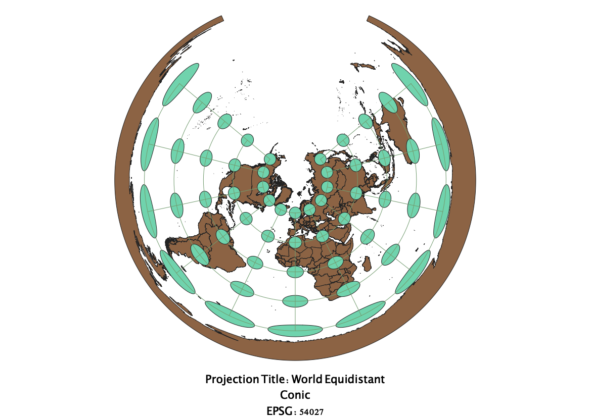
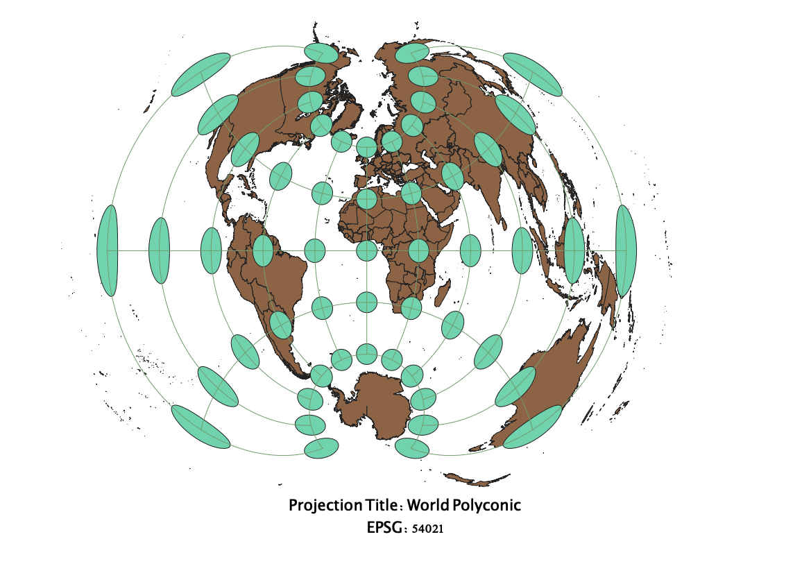

In this project I learned how to display images in different projections
Describe in your own words how you displayed the map in different projections using QGIS
For Homework 3, I used three different platforms to create the final
product: QGIS, GitHub and VS Code. With the zip file provided
containing data from Natural Earth, I uploaded base layers to
QGIS to demonstrate differences in projections. Using the Indatrix
mapper plugin, constant radius ellipsoidal caps were able to
demonstrate to me types of distortion that can occur with projections.
I then created print layers for each of the required projections to display
projection title and EPSG. Map files were then transferred to my dev
file, specifically created for GEOG370. It was once these files were
uploaded that I could work via VS Code to format the text, content and
images for the GitHub page.
WGS84 Projection
WGS84 is represented as an ellipsoid. It's one of the more common
models used in geography to display landmasses, however, it has a
drawback with distorting shape of land at the poles. The equator
and land around that latitude are fairly accurate.

Aitoff Projection
Aitoff projections are not equal-area, resulting in some distortion
in area and shape. There's also differences in distance between
landmasses. Scale is in tact for the equator/central meridian.

Pseudo Mercator
Psuedo-Mercator projections are beneficial in their ability to
limit distortion with preserving elements of the equator and
is more advantageous for representing distance than several
other forms of projection. However, the size of landmasses become
greatly distorted. For example, Greenland appears to be around
the same size as Africa, when in reality this is not the case.

Sphere Winkel-I
Winkel-I projections are typically used as world maps since
they are non-conformal and non-equal area. This creates distortion
with area and shape. Generally speaking, scale remains true in
selection latitudes.

World Cylindrical
With cylindrical projections, the equators are almost always
true to the actual latitude. Shape of landmasses at the poles
are distorted leading to increased areas among countries like
Canada and Russia.

World Equidistant Conic
World Equidistant Conic projections are commonly used to map
smaller landmass countries and lands elongated east to west.
This projection type is beneficial in that distances along
meridians are typically true. However, shape is distorted as you
move towards the south pole.

North Pole Azimuthal Equidistant
North Pole Azimuthal Equidistant projections use the polar aspect
to project straight lines originating at a given pole. In
appearance, North Pole Azimuthal is similar to World Equidistant
since both distort shape at the opposite pole. Distance is mostly
preserved. It's also the map used for the United Nation's seal!

African Sinusoidal
African Sinusoidal projections are pseudocylindrical and
equal-area. The poles are represented as points, like how they
would be on a sphere. However, landmasses are distorted as you
move further away from the true meridian and prime meridian.
With the landmasses near the poles, shape and area tends to be
distorted.

World Polyconic
World Polyconic projects are non-conformal and non equal-area.
This created distortion with shape, area and distance. However,
the central meridian is accurate along with the scale along that
line. Distortion increases from the equator of the map to the
poles.

Summary of Projections
EPSG: 3857, 53018, 54034, 54027, 102016, 102011 and 54021
Data used for this project
Download Natrual Earth 1:10m Cultural Vector